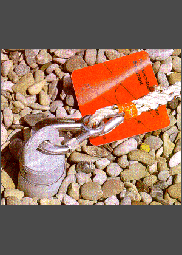

Die Anschlagpunkte des Anseilschutzes müssen die Kräfte eines Absturzes auffangen können und als Anschlageinrichtungen ausreichend tragfähig sein.
Ausreichende Tragfähigkeit ist gegeben, wenn dies für dauerhaft am Bauwerk befestigte Einrichtungen z.B. entsprechend einer allgemeinen bauaufsichtlichen Zulassung und Montageanleitung des Herstellers nachgewiesen ist.
Wenn der Anseilschutz direkt an einem Bauteil (z.B. Balken) angeschlagen wird, muss dies für eine Person eine statische Einzellast von 6 kN mit einem Teilsicherheitsbeiwert von 1,5, also 9 kN, aufnehmen können.